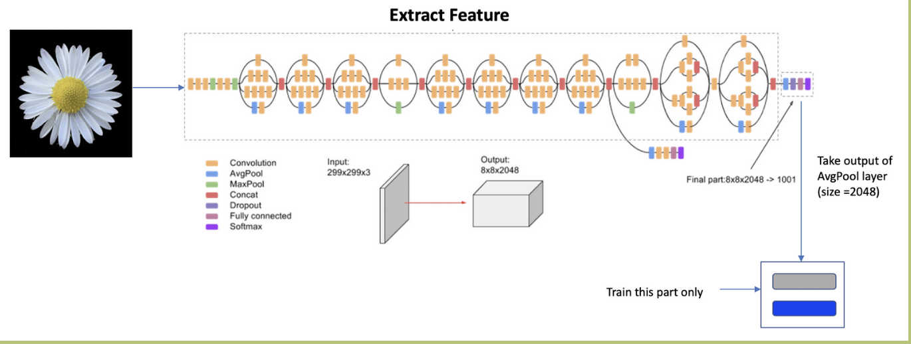
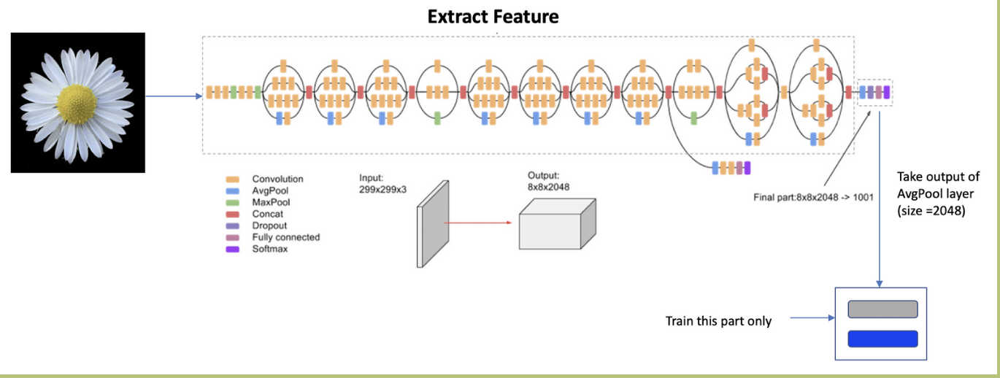

Food Classification
- Fatima Hassan
- Menna Ghalwash
Problem Statement
The aim of this project is to input an image of an item of food and get the name as an output using machine learning. Since digital technologies integrated itself in the everyday life of humans, the food recognition system will integrate itself as well with various functions to help people in their daily lives.
Dataset
Food images (food 101): It contains numerous images of dishes in 101 categories; each category contains 1000 images of the food with resolution of 384x384x3.

Input/Output Examples
State of the art
Original Model from Literature
As illustrated in the model training procedure, the model is expanded in order to avoid overfitting; however, we believe that this is not enough to avoid overfitting and other techniques can be used. While researching, we read about regularisation by using drop out for example, this idea was also recommended in the model’s description. Also more augmentation can be tried on test images for better results. It is important splitting the dataset and testing on splitted classes; however, it would also be better to try to fine tune on the entire dataset. Deal with unknown dishes: we want to find a way to classify dishes that do not belong to any of the categories that we have. Maybe we would create a new class for unknown dishes and train them along the way or find similarities between them and known dishes and point out that they are similar but not the same. Hyperparameters: - ReLU - L2 Regularization - Dropout - Softmax - Categorical crossenthropy - 2D pooling - SGD
Proposed Updates
Data augmentation
What did we change? - saturation - rotation - mirror - zoom - height & width - brightness
Hyperparameter Tuning
We tried out differnent hyperparameters for the model in order to diistinguish the best combination. These hyperparameters included changing activation functions, loss functions, optimizers,...etc
Ensemble Learning
Ensemble is the process of combining multiple models resulting in one reliable model to improve the performance.
 
